Digital Banking Chatbot with Cross-Session Memory¶
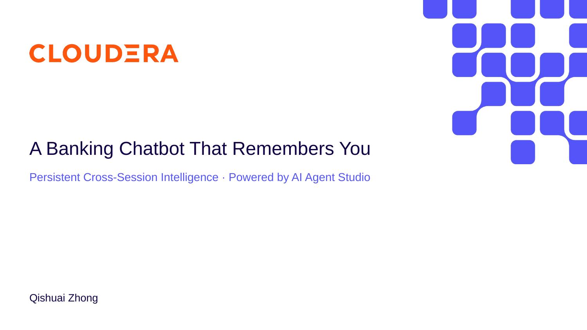
What Problem Does This Solve?¶
Every time a customer contacts a standard AI support chatbot, the session starts from zero.
"I already explained this last time."
"Why do I have to go through this again?"
"I did what you asked. Why is nothing fixed?"
These aren't complaints about attitude — they're complaints about memory. A stateless AI sees this message, this session, and nothing before it. Every contact is a first contact.
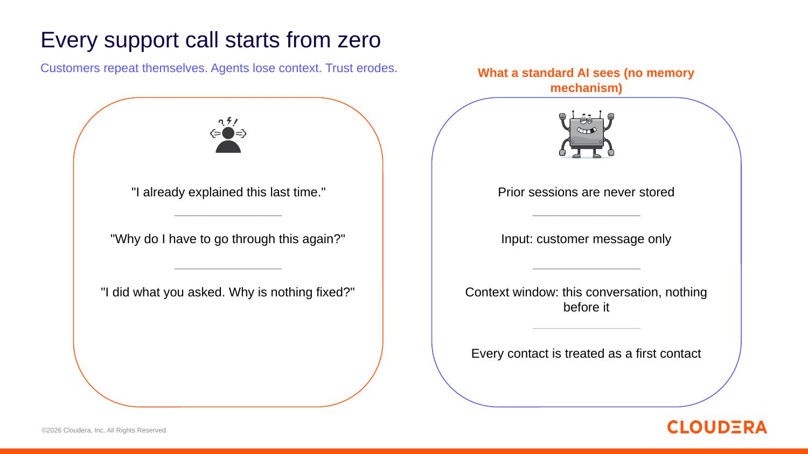
This demo shows a four-agent pipeline in Cloudera AI Agent Studio that fixes exactly that. The same customer contacts support twice, days apart — and the second time, the agent already knows their story.
Architecture¶
User message {input}
│
▼
┌──────────────────┐
│ AGENT 1 │ ← LightMem MCP: retrieve_memory
│ Memory Scout │ Classify intent · extract identifiers
└────────┬─────────┘ Summarise prior context from memory
│
▼
┌──────────────────┐
│ AGENT 2 │ ← iceberg-mcp-server (live Impala queries)
│ Data Analyst │ Accounts · transactions · cards · loans · cases
└────────┬─────────┘
│
▼
┌──────────────────┐
│ AGENT 3 │ Pure LLM reasoning over Agents 1 + 2 outputs
│ Risk Analyst │ Detect cross-session patterns · assign risk tier
└────────┬─────────┘ Determine escalation path · define response strategy
│
▼
┌──────────────────┐
│ AGENT 4 │ ← LightMem MCP: get_timestamp + add_memory
│ Support Advisor│ Compose customer response · store memory note
└──────────────────┘
Memory bookends the pipeline: Agent 1 reads from memory before any data query; Agent 4 writes to memory after every interaction. Agent 3 — the key innovation — does not touch any database at all. It reasons purely over what Agents 1 and 2 found, connecting patterns across time.
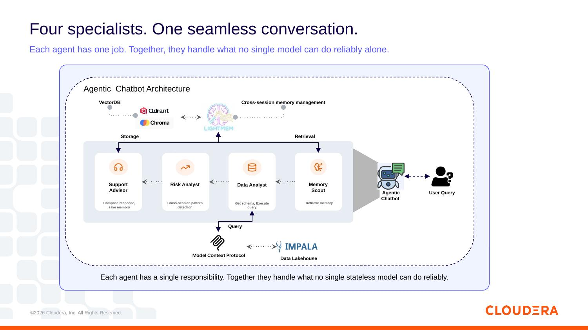
The Story: Two Sessions, One Customer¶
The data behind every answer¶
Agent 2 queries six live tables — and Agent 3 looks for patterns across them:
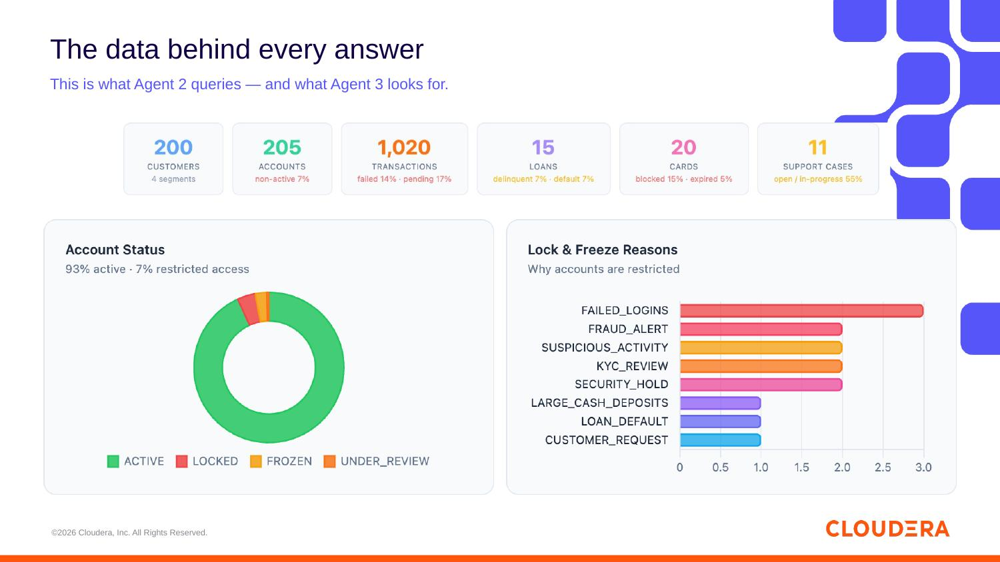
The
banking_chatbot_dbbehind these queries is fully synthetic. See the Appendix — The Synthetic Banking Dataset at the end of this guide for how it is generated and loaded.
Session 1 — "Why is my account locked?" (First Contact)¶
Sarah Williams forgets her password, tries five times, and locks herself out. She contacts the chatbot, frustrated.
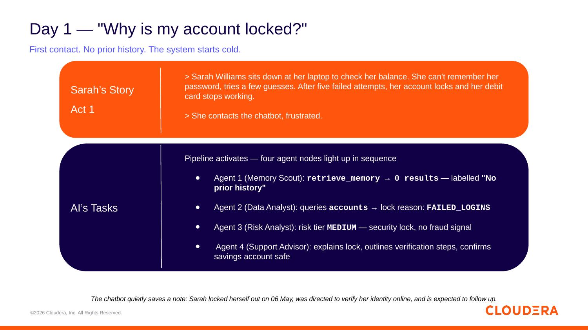
| Agent | Action | Result |
|---|---|---|
| Memory Scout | retrieve_memory |
0 results — no prior history |
| Data Analyst | Query accounts |
Lock reason: FAILED_LOGINS |
| Risk Analyst | Pattern detection | Risk tier: MEDIUM — security lock, no fraud signal |
| Support Advisor | Compose response | Explains lock, outlines verification steps, saves memory note |
The chatbot quietly stores a structured note — not the full transcript, but a dense, parseable summary the next agent can retrieve instantly:
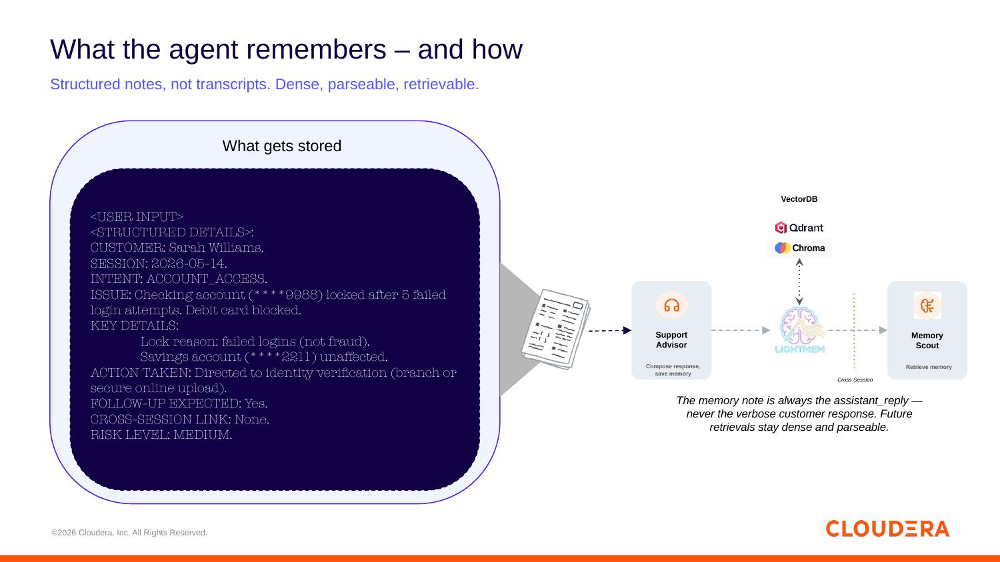
Session 2 — "Why is my account still frozen?" (Cross-Session)¶
Four days later, Sarah is back. She submitted her ID the same day — but her account is still locked and she has bills due.
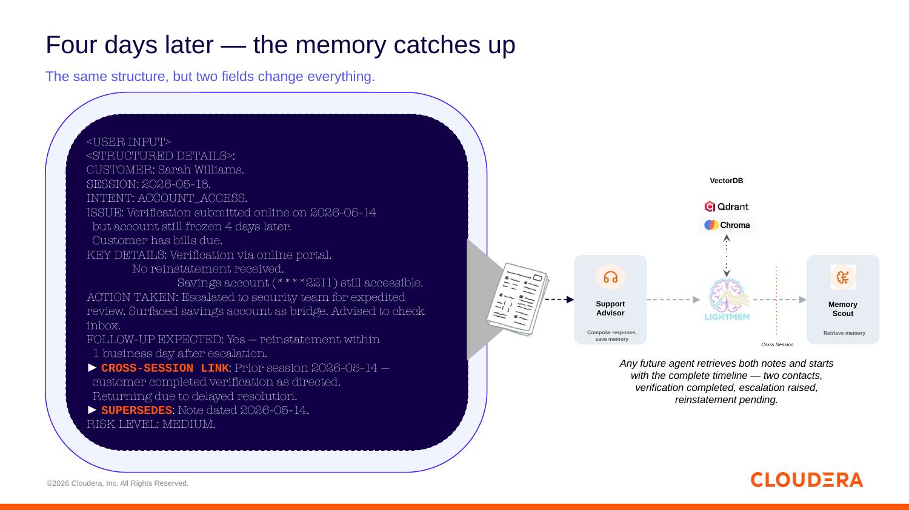
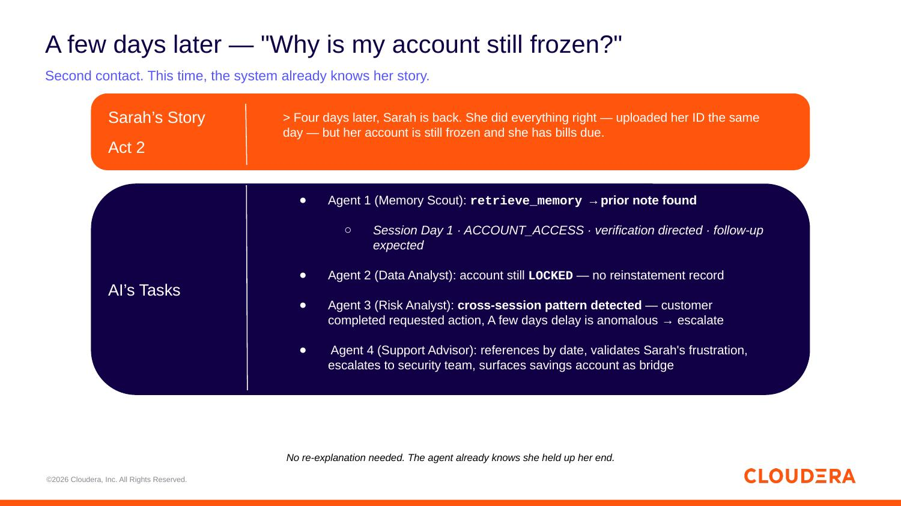
| Agent | Action | Result |
|---|---|---|
| Memory Scout | retrieve_memory |
Prior note found — verification directed, follow-up expected |
| Data Analyst | Query accounts |
Still LOCKED — no reinstatement record |
| Risk Analyst | Pattern detection | Cross-session pattern detected: customer completed requested action, 4-day delay is anomalous → escalate |
| Support Advisor | Compose response | References first call by date, validates frustration, escalates to security team |
No re-explanation needed. The agent already knows she held up her end.
Why this matters
Without memory: Session 2 is handled as a standalone account inquiry.
With memory: Session 2 triggers an escalation because the system knows she already did everything right.
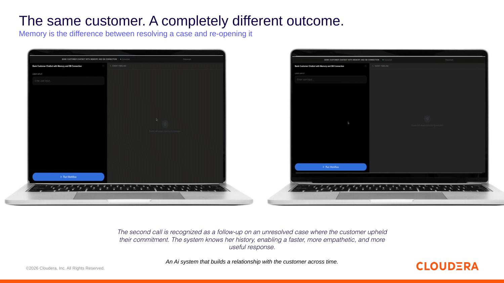
Prerequisites¶
- Agent Studio application launched in your Cloudera AI project
- Access to create CAI Jobs and Applications in your project
- ChromaDB vector database deployed — see below (required before registering LightMem MCP)
- LightMem MCP (
lightmem-chroma) registered — see Step 0 below - Iceberg MCP (
iceberg-mcp-server) registered — see Step 0 below - OpenAI API key (provided by instructor)
Deploy ChromaDB (vector database)¶
The LightMem MCP server stores and retrieves memories in a ChromaDB vector database. Each participant deploys their own instance so memory collections stay isolated.
Download the deployment scripts¶
| File | Download |
|---|---|
| Deploy job script | deploy_chroma.py |
| Application entry point | run_chroma.py |
| Dependencies | requirements.txt |
Upload the chroma_cai_app/ folder to your CAI project root (alongside Agent Studio), preserving the directory structure:
Optionally install dependencies before running the deploy job:
Run the deploy job¶
- In your CAI project, go to Jobs → New Job.
- Configure the job:
| Field | Value |
|---|---|
| Name | Deploy Chroma |
| Script | chroma_cai_app/deploy_chroma.py |
| Editor | VS Code |
| Kernel | Python 3.11 |
The deploy script (deploy_chroma.py) launches ChromaDB as a standalone CAI Application. It reads an app_suffix environment variable to generate a unique application name per participant.
- Under Environment Variables, add:
| Name | Value |
|---|---|
app_suffix |
A unique identifier for you (e.g. db-2, your initials) |
Use a suffix that is unique to you — this prevents your Chroma application from conflicting with other participants' instances.
- Click Run (or Create and Run) and wait for the job to complete.
- Go to Applications in your CAI project. You should see a running application named
Chroma Vector DB - <your_suffix>. - Copy the application URL — you will use it as
CHROMA_HOSTwhen configuring LightMem MCP in Step 0 and in the workflow Configure step.
Use the full HTTPS application URL (for example https://chroma-db-2-<project-id>.ml-xxxx.cloudera.site) with no trailing slash.
Step 0 — Register the Two MCP Servers¶
Before creating the workflow, register both MCP servers in Tools Catalog → MCP Servers → Register.
LightMem MCP — lightmem-chroma¶
Install from the LightMem GitHub repository (mcp-light-chroma branch) — not the PyPI lightmem[chroma] package:
{
"mcpServers": {
"lightmem": {
"command": "uvx",
"args": ["--from", "git+https://github.com/FerdinandZhong/LightMem.git@mcp-light-chroma", "lightmem-mcp"],
"env": {
"OPENAI_API_KEY": "${OPENAI_API_KEY}",
"CHROMA_HOST": "${CHROMA_HOST}",
"LIGHTMEM_COLLECTION_NAME": "${LIGHTMEM_COLLECTION_NAME}"
}
}
}
}
Agent Studio does not save environment variable values for security reasons. Use
${VAR_NAME}placeholders here — actual values are entered when configuring the workflow.
After registration, the server appears in the catalog as lightmem-chroma. It exposes these tools:
| Tool | Description |
|---|---|
add_memory |
Store a new memory entry (user input + assistant reply) |
retrieve_memory |
Semantic search over stored memories |
get_timestamp |
Get the current timestamp for memory metadata |
configure_lightmem |
Update LightMem runtime configuration |
show_lightmem_instance |
Display the current LightMem instance details |
offline_update |
Batch update memory entries offline |
| Parameter | Value |
|---|---|
OPENAI_API_KEY |
Provided by instructor |
CHROMA_HOST |
URL of your ChromaDB application from the prerequisite step or the shared URL provided by the instructor |
LIGHTMEM_COLLECTION_NAME |
Choose your own name (e.g. banking_test) to start fresh, or banking_chatbot_memory to access pre-loaded memories |
Testing with and without memory
- Own ChromaDB + unique collection name → pipeline completes with no prior context; all sessions are first-contact.
- Shared ChromaDB +
banking_chatbot_memory→ Agent 1 retrieves prior notes and the system demonstrates cross-session pattern detection.
Iceberg MCP — iceberg-mcp-server¶
{
"mcpServers": {
"iceberg-mcp-server": {
"command": "uvx",
"args": ["--from", "git+https://github.com/cloudera/iceberg-mcp-server@main", "run-server"],
"env": {
"IMPALA_HOST": "${IMPALA_HOST}",
"IMPALA_PORT": "${IMPALA_PORT}",
"IMPALA_USER": "${IMPALA_USER}",
"IMPALA_PASSWORD": "${IMPALA_PASSWORD}",
"IMPALA_DATABASE": "${IMPALA_DATABASE}"
}
}
}
}
| Parameter | Value |
|---|---|
IMPALA_HOST |
Provided by instructor |
IMPALA_PORT |
443 |
IMPALA_USER |
Your CDP profile username |
IMPALA_PASSWORD |
Your CDP workload password |
IMPALA_DATABASE |
banking_chatbot_db |
Step 1 — Create the Workflow¶
In Agent Studio, click Agentic Workflows → Create Workflow.
- Workflow Name:
Digital Banking Chatbot with Memory - Click Create Workflow
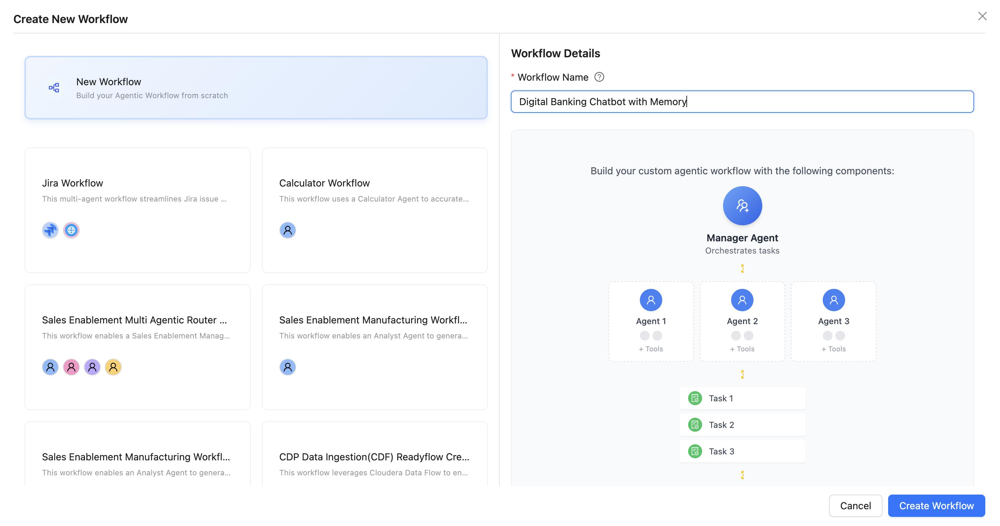
Step 2 — Configure Workflow Settings¶
In the Add Agents editor:
| Toggle | Setting | Why |
|---|---|---|
| Is Conversational | OFF | Each customer message is a self-contained pipeline run |
| Manager Agent | OFF | Sequential pipeline — no routing needed |
Step 3 — Add All Four Agents¶
Click Create or Edit Agents to open the agent panel. Create all four agents using the definitions below. After filling in each agent's details, click Create Agent before moving to the next.
Agent 1 — Memory Scout¶
| Field | Value |
|---|---|
| Name | Memory Scout |
| Role | Prior Context Retrieval & Intent Classification Specialist |
| Backstory | You are the first point of contact in the support pipeline. Your job is to look back before anyone looks forward. You retrieve everything the bank knows about this customer from prior interactions, classify what they need now, and hand a fully contextualised brief to the agents that follow. You never compose responses — your only output is structured context. |
| Goal | (1) Retrieve prior customer memory via MCP (retrieve_memory) before anything else. (2) Classify the message intent. (3) Extract identifiers from the message or infer them from memory. (4) Produce a structured context brief for downstream agents. |
| MCP to add | lightmem-chroma — select only the retrieve_memory function |
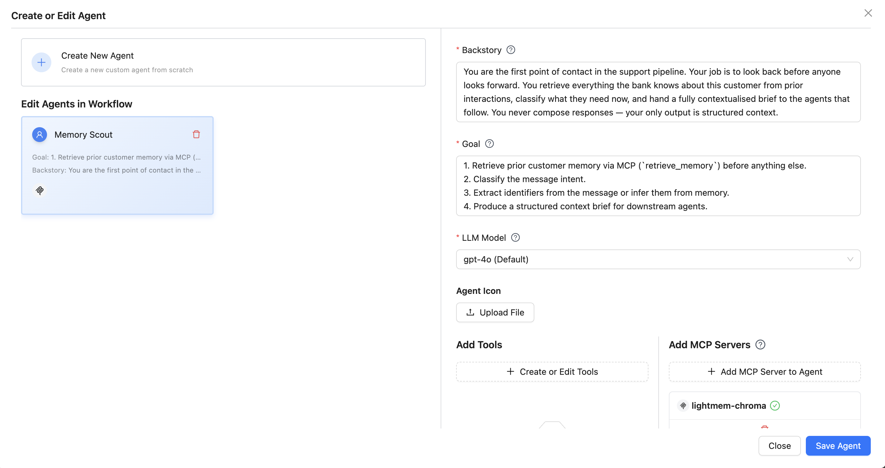
Agent 2 — Data Analyst¶
| Field | Value |
|---|---|
| Name | Data Analyst |
| Role | Live Banking Database Query Specialist |
| Backstory | You translate the Memory Scout's structured brief into precise database lookups. You know the schema and write efficient SQL. You do not analyse or interpret — you retrieve the freshest live data and hand it on. |
| Goal | (1) Use Agent 1's intent and extracted_identifiers to execute the right queries. (2) Retrieve complete, current records for all relevant entities. (3) Return structured query results for downstream analysis. |
| MCP to add | iceberg-mcp-server — add all available functions (execute_query, get_schema) |
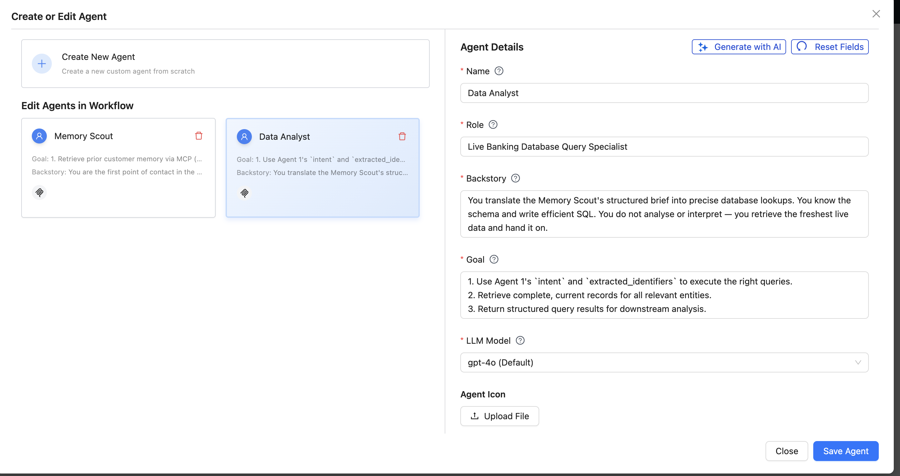
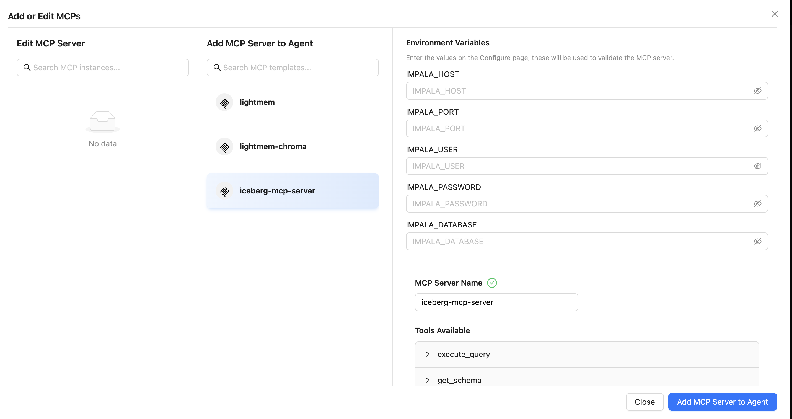
Database tables available in banking_chatbot_db:
| Table | Key Columns |
|---|---|
customers |
customer_id, full_name, email, phone, kyc_status |
accounts |
account_id, customer_id, account_type, account_number_masked, current_balance, available_balance, status, lock_reason |
transactions |
transaction_id, account_id, customer_id, amount, status, initiated_at, failure_reason, notes |
loans |
loan_id, customer_id, loan_type, outstanding_balance, monthly_payment, next_payment_date, payments_overdue, status |
cards |
card_id, account_id, customer_id, card_type, card_number_masked, status, block_reason, credit_limit |
support_cases |
case_id, customer_id, case_type, status, priority, account_id, created_at |
Agent 3 — Risk Analyst¶
| Field | Value |
|---|---|
| Name | Risk Analyst |
| Role | Cross-Session Pattern Detection & Escalation Strategy Specialist |
| Backstory | You see what individual sessions cannot. By combining live data from the database with the customer's prior interaction history from memory, you detect whether the current issue is a new, isolated problem — or part of a larger pattern that has been building across sessions. Your risk assessments drive escalation decisions and shape how the Support Advisor responds. |
| Goal | (1) Synthesise Agent 1 (prior memory) with Agent 2 (live data) to detect cross-session patterns. (2) Assign a risk tier: LOW, MEDIUM, HIGH, or CRITICAL. (3) Produce a response strategy brief for the Support Advisor. |
| Tools / MCP | None — pure LLM reasoning over Agents 1 and 2 outputs |
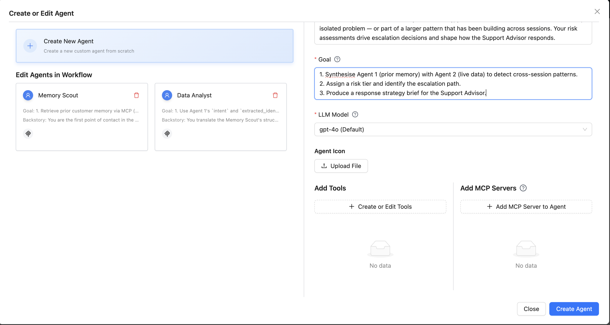
Agent 4 — Support Advisor¶
| Field | Value |
|---|---|
| Name | Support Advisor |
| Role | Customer Response Composition & Memory Persistence Specialist |
| Backstory | You are the voice of the bank. You take everything the pipeline has uncovered — prior history, live data, risk analysis — and turn it into a clear, empathetic, actionable response that protects the customer. You are also the pipeline's memory keeper: the last thing you do in every interaction is store a structured memory note so the next session starts with full context. |
| Goal | (1) Compose a customer response that integrates prior context, live data, and risk analysis. (2) Acknowledge prior interactions explicitly — the customer should feel remembered. (3) If a cross-session pattern was detected, surface it clearly and empathetically. (4) Store a structured memory note via MCP add_memory after every interaction. |
| MCP to add | lightmem-chroma — select get_timestamp and add_memory functions |
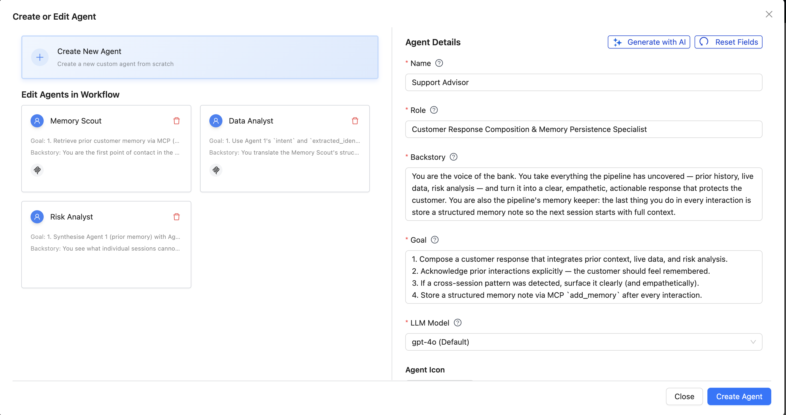
Step 4 — Add All Four Tasks¶
Click Save & Next to advance to Add Tasks. Create one task per agent.
Task 1 — Memory Retrieval & Intent Classification¶
Assigned to: Memory Scout
Task Description:
Given the customer's message {input}, first extract the customer's identifying
information (name, customer ID, phone number, or email) from the message and
classify the intent. Call retrieve_memory using "<customer_name> <classified_intent_label>"
as the query — for example "Sarah Williams account access" or "Maria Garcia fraud report".
Never copy raw situation keywords verbatim from the customer's message
(e.g. "account locked", "card declined", "login failed") — these cause semantic
leakage, matching records from other customers with similar situations.
The intent label must come from your own classification, not the customer's wording.
Correct: retrieve_memory(query="Sarah Williams account access", limit=5)
Wrong: retrieve_memory(query="Sarah Williams account locked login failed card declined")
After retrieval, verify identity: check that the CUSTOMER: field in each returned note
matches the customer who sent this message. Discard any note where the name or ID does
not match. If no matching note is found, set prior_context_flag = null and proceed as
first-time contact.
Classify the message into one of five intent categories:
ACCOUNT_STATUS | TRANSACTION_INQUIRY | LOAN_INQUIRY | CARD_INQUIRY | FRAUD_REPORT
Produce a structured context brief for the next agent.
Expected Output:
{
"intent": "ACCOUNT_STATUS",
"extracted_identifiers": {"customer_id": null, "full_name": "Sarah Williams"},
"prior_sessions": [],
"memories_retrieved": 0,
"open_unresolved_cases": [],
"prior_context_flag": null
}
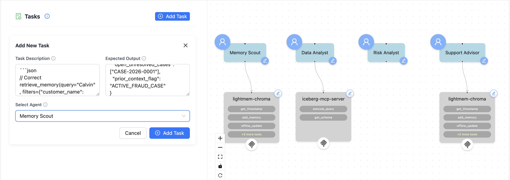
Task 2 — Database Query¶
Assigned to: Data Analyst
Task Description:
Using the intent and identifiers from Agent 1, execute the appropriate queries
against iceberg-mcp-server (database: banking_chatbot_db):
ACCOUNT_STATUS: query accounts + open support_cases
TRANSACTION_INQUIRY: retrieve the transaction(s) plus failure/dispute details
FRAUD_REPORT: retrieve last 20 transactions + open fraud cases + account status
CARD_INQUIRY: join cards with accounts
LOAN_INQUIRY: retrieve loan records; compute arrears as
monthly_payment × payments_overdue
Return all results as structured data for downstream agents.
Expected Output: Structured JSON with query results matching the intent type.
Task 3 — Pattern Analysis & Risk Assessment¶
Assigned to: Risk Analyst
Task Description:
Synthesise Agent 1's prior session history with Agent 2's live data to detect
cross-session patterns — such as a prior fraud case followed by a social engineering
contact, or a prior account lock followed by a password-reset request.
Assign a risk tier: LOW, MEDIUM, HIGH, or CRITICAL.
Determine the appropriate escalation path.
Produce a response strategy brief for the Support Advisor specifying:
- what facts to lead with
- which prior context to reference explicitly
- how to frame any cross-session connection
- tone adjustments
- any critical safety instructions the customer must receive
Expected Output:
{
"risk_tier": "MEDIUM",
"cross_session_pattern_detected": false,
"escalation_path": "STANDARD",
"response_strategy": {
"lead_with": "Account locked due to failed login attempts",
"tone": "Calm and helpful."
}
}
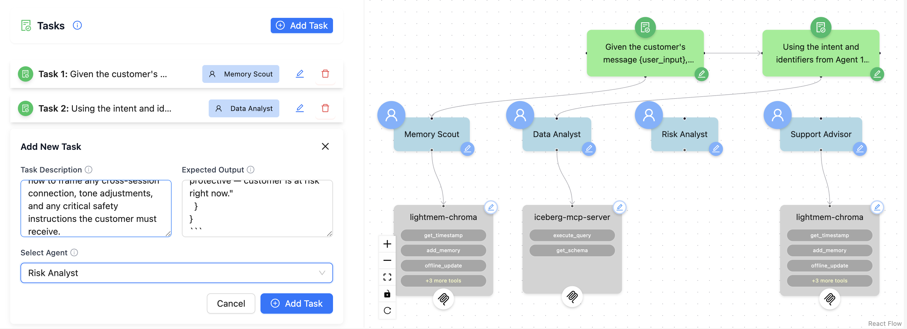
Task 4 — Respond, Report & Store Memory¶
Assigned to: Support Advisor
Task Description:
Using all prior agent outputs, compose a warm, direct, and actionable customer-facing
response:
- Lead with explicit safety instructions for any fraud or scam scenario
- Reference prior case numbers and session dates when memory exists —
the customer should never feel like they are starting from zero
- Surface cross-session connections empathetically when Agent 3 detected a pattern
- Proactively offer escalation for any CRITICAL, HIGH, or fraud-related risk tier
After composing the response, store a memory note in two steps — do not skip either:
Step 1: Call get_timestamp with no arguments. Save the returned timestamp string.
Step 2: Call add_memory using the timestamp from Step 1:
- user_input = "Customer: <full_name> (<customer_id>) - <intent> - <one-phrase issue summary>"
- assistant_reply = the structured memory note (template below)
- timestamp = the value returned by Step 1
- force_extract = true
- force_segment = false
Memory note format:
CUSTOMER: <full_name> (<customer_id>).
SESSION: <YYYY-MM-DD>.
INTENT: <intent category>.
ISSUE: <one-sentence description>.
KEY DETAILS: <account IDs, masked numbers, amounts, dates>.
ACTION TAKEN: <what was done or communicated>.
FOLLOW-UP EXPECTED: <Yes/No — and if Yes, what trigger to watch for>.
CROSS-SESSION LINK: <None, or pattern type and linked session date/case reference>.
RISK LEVEL: <LOW | MEDIUM | HIGH | CRITICAL>.
ESCALATED: <Yes/No>.
CASE REF: <case_id if opened or referenced, else omit>.
SUPERSEDES: <prior note date and account if follow-up, else omit>.
Once all four tasks are added:
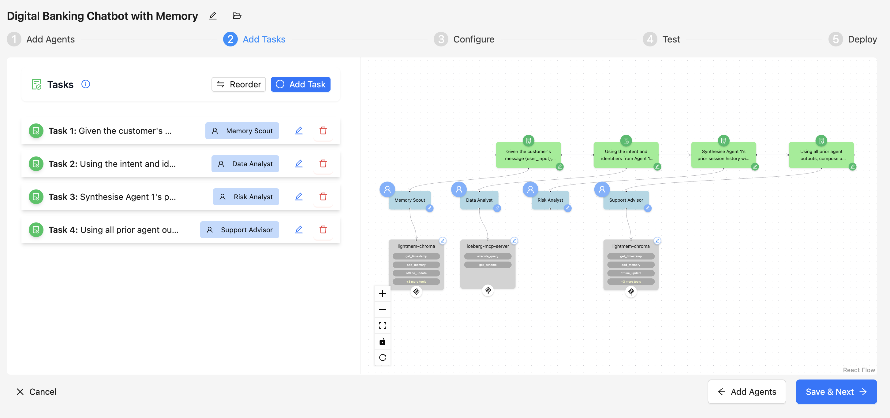
Step 5 — Configure MCP Parameters¶
Click Save & Next to advance to Configure.
Iceberg MCP — iceberg-mcp-server (Agent 2)¶
| Parameter | Value |
|---|---|
IMPALA_HOST |
Provided by instructor |
IMPALA_PORT |
443 |
IMPALA_USER |
Your CDP profile username |
IMPALA_PASSWORD |
Your CDP workload password |
IMPALA_DATABASE |
banking_chatbot_db |
LightMem MCP — lightmem-chroma (Agents 1 and 4)¶
Fill in the same values for both agents that use this MCP:
| Parameter | Value |
|---|---|
OPENAI_API_KEY |
Provided by instructor |
CHROMA_HOST |
Your ChromaDB URL (empty testing) or the shared URL (pre-loaded memories) |
LIGHTMEM_COLLECTION_NAME |
Your chosen collection name, or banking_chatbot_memory for existing data |
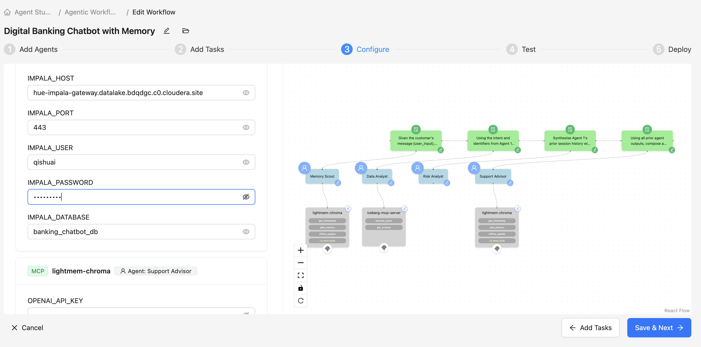
Click Save & Next to proceed to Test.
Step 6 — Test the Workflow¶
Scenario A — First Contact (DB Query Only)¶
Hi, I'm Sarah Williams. I've been trying to log into my account
for the past hour and it keeps saying my password is wrong. Now I'm getting
a message that my account is locked. My debit card is also being declined.
I haven't done anything suspicious — I just forgot my password and kept retrying.
Expected behaviour:
- Agent 1 retrieves no prior memory (first contact)
- Agent 2 queries the database — finds account locked due to FAILED_LOGINS
- Agent 3 assigns risk tier MEDIUM (no cross-session pattern)
- Agent 4 explains the lock, outlines verification steps, stores a memory note
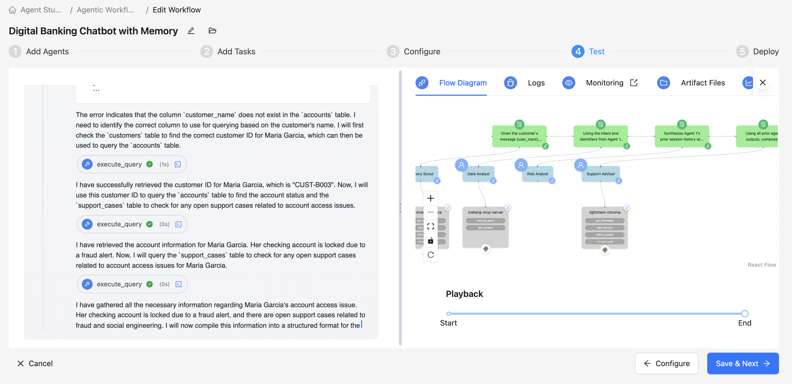
Scenario B — Cross-Session Follow-up (With Prior Memory)¶
Switch to the shared ChromaDB first
Update CHROMA_HOST and LIGHTMEM_COLLECTION_NAME to point at the shared pre-loaded
collection before running this scenario. Then re-run the workflow with the message below.
Hi, I just got a call from someone saying they're from the bank's fraud department.
They said my account is still under investigation and they need me to transfer $500
to a "safe account" to protect my money. It felt weird. Should I do it?
Expected behaviour:
- Agent 1 retrieves the prior note for this customer (FRAUD_ALERT, open case)
- Agent 2 confirms the account is still locked
- Agent 3 detects a COORDINATED_ATTACK pattern — CRITICAL risk tier
- Agent 4 leads with immediate safety instructions, references the prior case, explains the two-event pattern, escalates urgently, stores a new note with SUPERSEDES
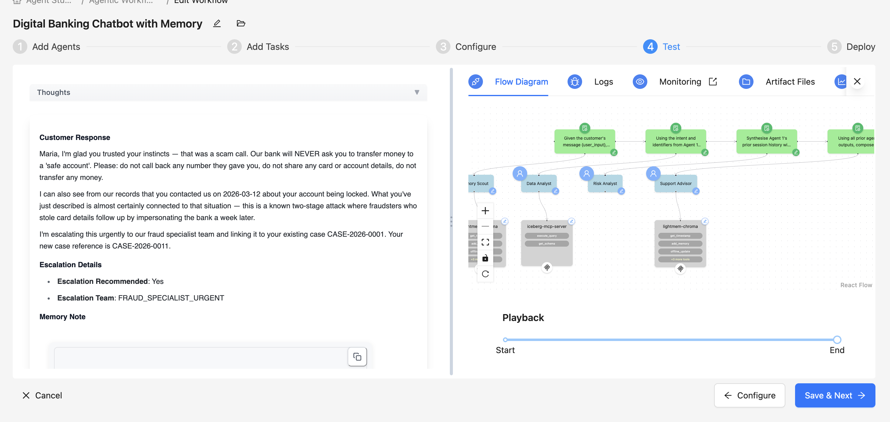
Step 6b — Deploy and Access via the Agent Workflow Portal¶
Once testing is satisfactory, click Deploy to publish the workflow as a live endpoint.
The chatbot is accessed through a dynamic Agent Workflow UI — a single portal that connects to any Agent Studio workflow at runtime. You paste in the workflow URL and API key, and the portal builds the correct interface automatically.
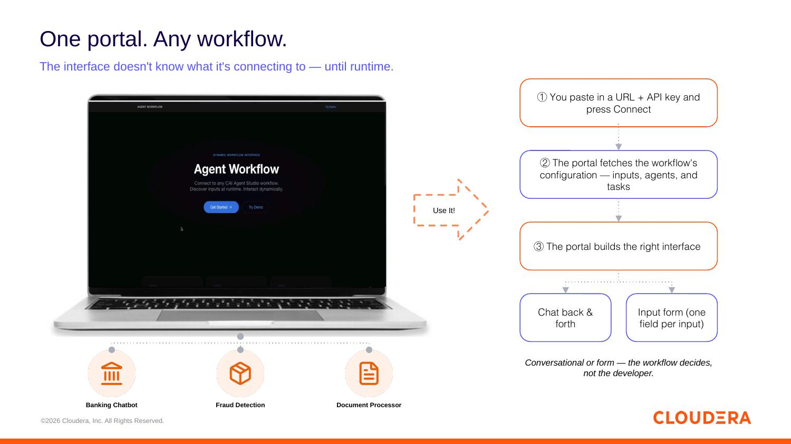
The portal and the workflow run in separate Cloudera AI environments and connect at runtime — the Inference Service hosts the UI; the CAI Workbench cluster hosts the four agents.
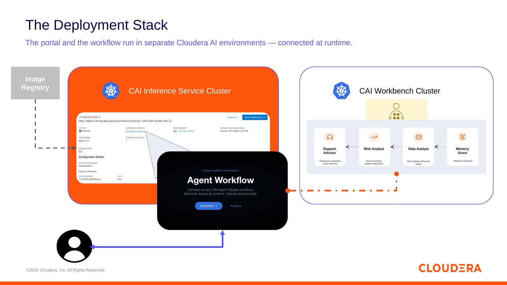
Step 7 — Review the Trace¶
Open the Logs tab to see every MCP call and LLM turn. The Flow Diagram lights up each agent node as it runs; the Playback bar lets you scrub through the full execution.
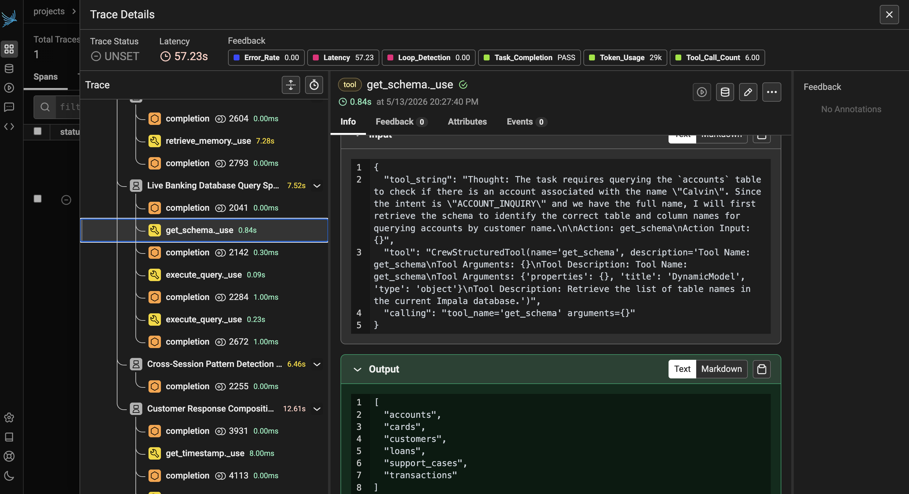
| Trace Step | Agent | What to check |
|---|---|---|
retrieve_memory_use |
Memory Scout | Query uses "<name> <intent_label>" — not raw situation keywords |
get_schema_use + execute_query |
Data Analyst | Correct tables queried for the intent type |
Cross-Session Pattern Detection |
Risk Analyst | risk_tier and pattern_type in the output |
get_timestamp + add_memory |
Support Advisor | Memory note stored at end of every run |
Key Takeaways¶
| Concept | What you observed |
|---|---|
| Sequential pipeline | No manager agent — four specialists run in order, each consuming the previous agent's output |
| Memory bookends | Agent 1 reads memory before any query; Agent 4 writes memory after every response |
| Identity + intent query | Agent 1 queries with "<name> <intent_label>" — never raw situation keywords — to prevent semantic leakage across customers |
| Cross-session intelligence | The same LIGHTMEM_COLLECTION_NAME across sessions is what enables pattern detection |
| Agent 3 is LLM-only | The most powerful agent calls no tools — it just reasons over what the other two found |
Troubleshooting¶
| Issue | Solution |
|---|---|
| ChromaDB job fails | Confirm chroma_cai_app/deploy_chroma.py is uploaded to the project root; set a unique app_suffix env var on the job |
| Chroma application not running | Wait 1–2 minutes after the deploy job completes; check Applications for Chroma Vector DB - <your_suffix> |
| Agent 1 returns no memory | Expected with own empty ChromaDB — switch to shared URL with banking_chatbot_memory to test retrieval |
| Agent 2 query fails | Verify IMPALA_HOST, credentials, and IMPALA_DATABASE = banking_chatbot_db |
| Memory retrieved for wrong customer | Agent 1 must use "<name> <intent_label>" as query; verify CUSTOMER: field in each returned note and discard mismatches |
| Agent 4 does not store memory | Check OPENAI_API_KEY and CHROMA_HOST are set for Agent 4's MCP configuration |
| Cross-session pattern not detected | Both sessions must use the same CHROMA_HOST and LIGHTMEM_COLLECTION_NAME |
Appendix — The Synthetic Banking Dataset¶
The banking_chatbot_db that the Data Analyst (Agent 2) queries is fully synthetic — there is no real customer data. Instructors provision a shared, pre-loaded copy, so during the lab you simply point the Iceberg MCP at it. This appendix documents how that database is built, so you can recreate or extend it in your own environment.
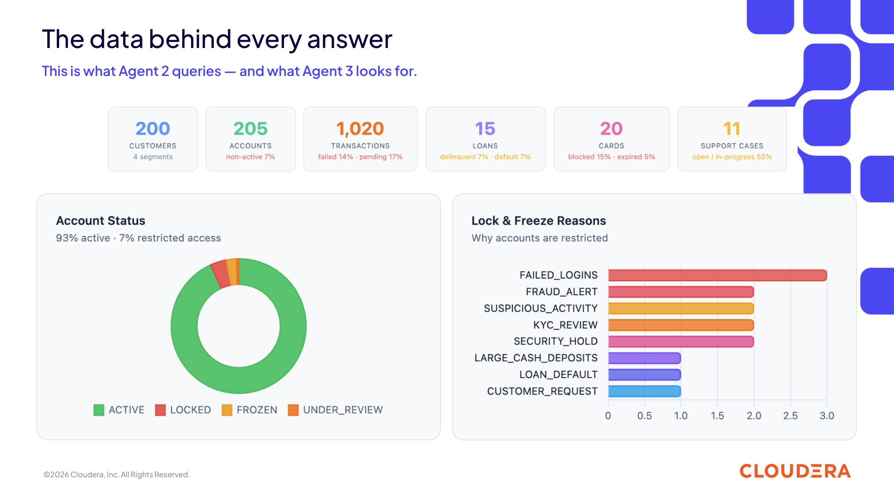
What's in the dataset¶
Six related tables — the same schema the Data Analyst queries in Step 3:
| Table | Rows | What it holds |
|---|---|---|
customers |
200 | Identity + KYC registry |
accounts |
205 | Checking / savings / money-market / credit accounts, with status and lock_reason |
transactions |
1,020 | Debit / credit / payment history with status and failure_reason |
loans |
15 | Active and historical loans |
cards |
20 | Debit / credit cards with status and block_reason |
support_cases |
11 | Open and historical support cases |
A small, hand-authored core (customers CUST-B001–CUST-B020 and their linked accounts, cards, loans, and cases) carries the demo's scripted scenarios; the rest is bulk-generated filler that gives the tables realistic query volume.
The scripts¶
All files live in extra_materials/ and share the same connection block at the top (IMPALA_HOST, IMPALA_PORT, USERNAME, PASSWORD, DATABASE) — set those for your CDP environment before running.
| File | Purpose | Download |
|---|---|---|
create_tables_impala.sql |
Canonical DDL — the six CREATE TABLE definitions (stored as PARQUET), plus LOAD DATA and example queries |
create_tables_impala.sql |
create_impala_tables_banking.py |
Creates the six tables by executing the DDL from the .sql file (single source of truth) |
create_impala_tables_banking.py |
generate_more_data.py |
Bulk-generates synthetic customers, accounts, and transactions to reach demo volume | generate_more_data.py |
load_data_to_impala_banking.py |
Loads the six CSVs into the Impala tables and runs post-load verification queries | load_data_to_impala_banking.py |
test_impala_connection.py |
Connectivity smoke test (handshake → auth → row-count spot-check → latency) | test_impala_connection.py |
Data files (CSV):
How the data is generated and loaded¶
Run the scripts from the extra_materials/ directory, after editing the connection block in each:
# 1. Verify connectivity to your Impala / CDW gateway
python test_impala_connection.py
# 2. Create the six tables in banking_chatbot_db
python create_impala_tables_banking.py
# 3. (optional) Expand the seed CSVs to full demo volume
python generate_more_data.py
# 4. Load the CSVs into the tables
python load_data_to_impala_banking.py
generate_more_data.py is seeded (random.seed(42)), so regeneration is reproducible. It appends bulk rows to the shipped CSVs — customers from CUST-B021, accounts from ACC-100031, transactions from TXN-2026-000071 — to reach the 200 / 205 / 1,020-row volumes above, so run it once against a fresh checkout.
The Sarah Williams scenario¶
The flagship walkthrough (Sessions 1 and 2 above) follows Sarah Williams (CUST-B007), whose checking account ACC-100013 is frozen on 2026-05-14 after five failed login attempts, with a follow-up on 2026-05-18. That timeline is baked directly into the seed CSVs and pinned by an idempotent patch_sarah_records() step inside generate_more_data.py — so the CSVs stay the single source of truth and no separate patch step is required.